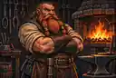
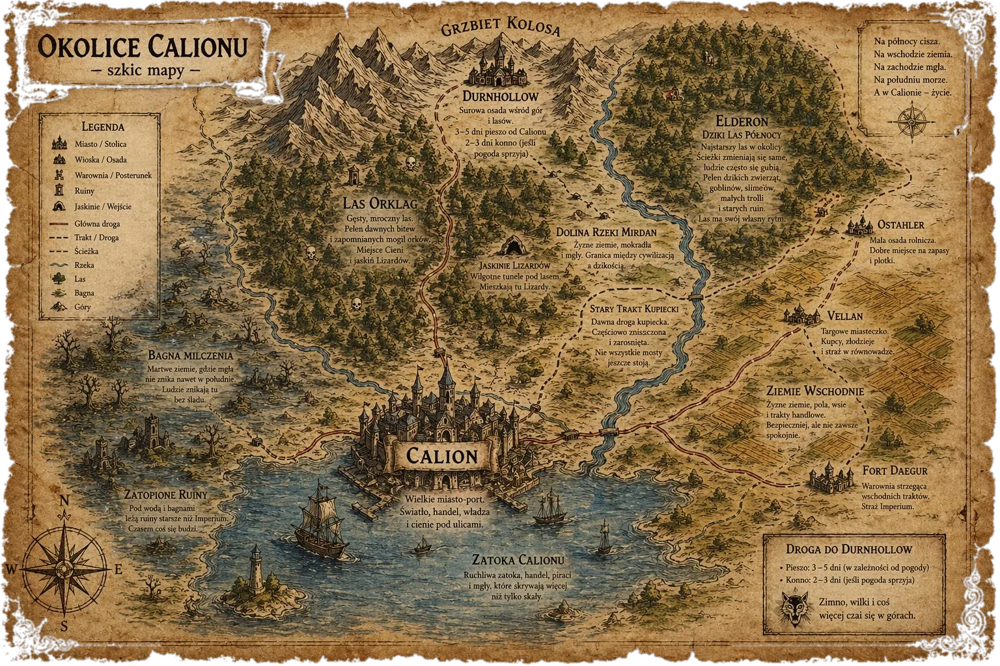
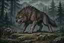
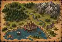

Z kronik Calionu
Ralfor
Stary krasnolud i mistrz kowalski. Jego kuźnia współpracuje z Gildią Poszukiwaczy, a wykonana tam broń ma własną renomę.
Poznaj postacieNie udało się pobrać opisów. Sprawdź połączenie i spróbuj ponownie.
Przy stole Poszukiwaczy każdy ma historię. Jedne zapisano w kronikach, inne dopiero czekają na odkrycie.
Otwórz księgę świataOd portowych ulic przez Las Elderon aż po Grzbiet Kolosa. Każda droga niesie inne opowieści.
Przejrzyj atlas3–5 dni pieszo z Calionu, jeśli pogoda sprzyja.

Rozwiń mapę
Stary krasnolud i mistrz kowalski. Jego kuźnia współpracuje z Gildią Poszukiwaczy, a wykonana tam broń ma własną renomę.
Poznaj postacie
W lasach północy łatwo zgubić szlak. Jeszcze łatwiej zapomnieć, że nie każda leśna ścieżka jest bezpieczna.
Przeglądaj bestiariuszPoznaj tych, którzy rządzą Calionem, chronią jego mury albo wyruszają na północne szlaki.

Oryginalny szkic okolic Calionu. Kliknij „Powiększ mapę”, aby przejrzeć drobniejsze nazwy i oznaczenia.
Wskazówka: możesz włączyć pełny ekran przyciskiem powyżej. Aby powrócić, naciśnij Esc. Postępy i ustawienia zależą od wybranej gry.